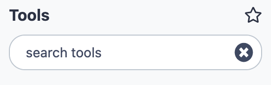
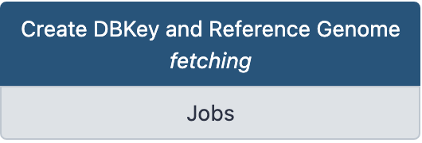
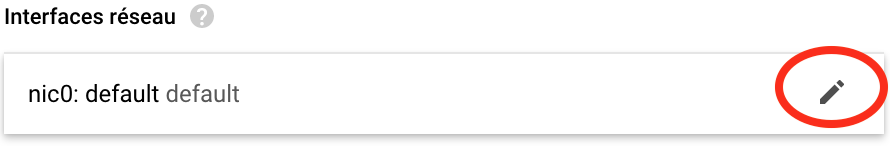
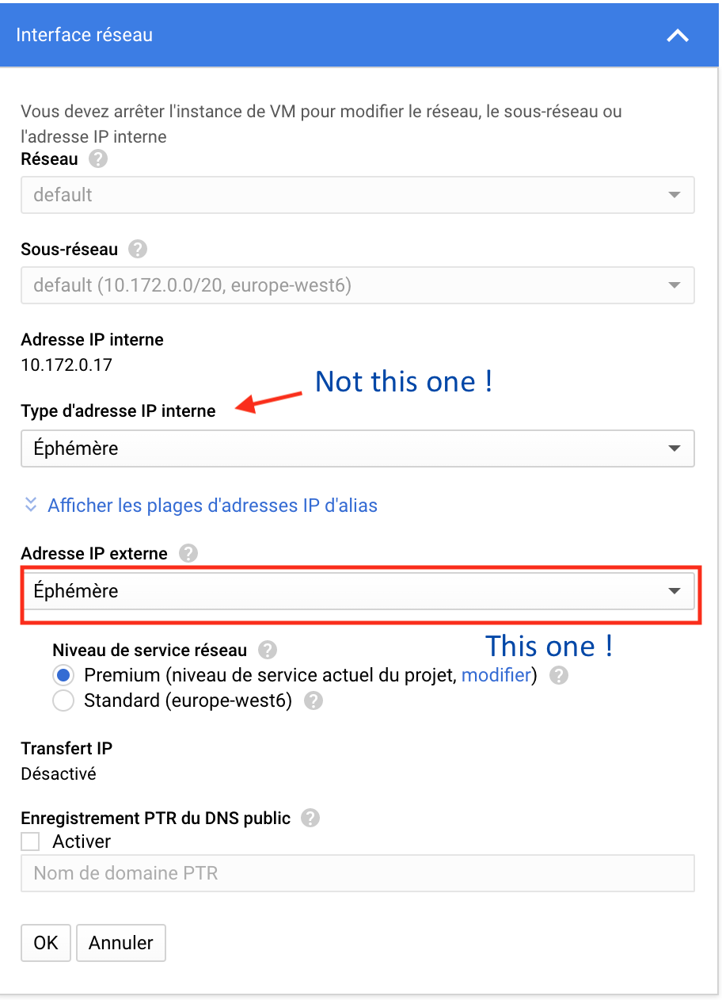
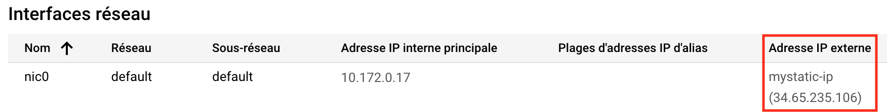

The last thing we can do for the incoming analyses is to prepare several indexes of your Drosophila genome, which will be available Galaxy-wide.
Alignment programs and a number of tools use their own, specific index, to speed up their tasks. Thus, since you will align later reads using bowtie, you should prepare a bowtie genome index. Likewise, you will need to make a conversion of SAM to BAM format using a samtools tool. You also need to prepare a fasta index (.fai) of your genome for this tool.
In Galaxy, these indexing tasks are preceeded by a "fetch and dbkey" task, whose purpose is to implement the Galaxy database and inform it of the existence of this genome and of possible derived indexes.
1.  Prepare the Drosophila genome dmel-all-chromosome-r6.18 for indexation.¶
Prepare the Drosophila genome dmel-all-chromosome-r6.18 for indexation.¶
In the history REFERENCES we have uploaded a dmel-all-chromosome-r6.18 dataset. If you
click on the name of the dataset, you will expand the (green) dataset box and see that it
is a fasta format dataset which contains 1870 sequences.
Indeed, the dataset contains the main Drosophila chromosomes X, Y, 2 (L and R), 3 (L and R) and 4, but also many unmapped contig sequences and possibly some minor haplotypes.
Thus, before indexing our Drosophila genome, we are going to clean it a little bit by,
- simplifying the fasta headers (keeping only the characteres before the first space)
- and explicitly picking the main chromosomes aforementioned.
A. simplify fasta headers¶
- Go to the
REFERENCEhistory - Select the tool Regex Find And Replace (Galaxy Version 1.0.1) in the tool
sub-menu
Analyse des Génomes. To find easily the tool, you may also typeRegex Find And Replacein the search box  at the top of the tool bar.
fill the form of [Regex Find And Replace]
- Select lines from:
10. dmel-all-chromosome-r6.18 - Check: Click
Insert Check - Find Regex:
.+ this is a space, followed by a dot, followed by a plus.
this is a space, followed by a dot, followed by a plus. - Replacement: Nothing be sure that the remplacement box is empty
- Click

Execute
After run, you can compare the new dataset with the initial genome dataset.
What can you say, at least for the chromosome 2L ?
The visible header is now >2L.
It was >2L type=golden_path_region; loc=2L:1..23513712; ID=2L; dbxref=GB:AE014134,GB:AE014134,REFSEQ:NT_033779;
MD5=b6a98b7c676bdaa11ec9521ed15aff2b; length=23513712; release=r6.18; species=Dmel;
before !
Create a short list of string "on the fly" with [Upload Data]
- Click the
Upload Datamenu - Click the
Paste/Fetch Databutton - Give a name to the dataset (
chromosome_listin replacement ofNew File) - In the main Paste field copy this list:
- Click the Start dark blue button
- Select the tool Pick Fasta sequences with header satisfying a string query
(Galaxy Version 3.0.1) in the tool sub-menu
Analyse des Génomes. You may also use The tool search box.
Fill the form of Pick Fasta sequences
- Source file:
11. Regex Find And Replace on data 10 - for a: Check
list of string - retrieve sequences whose headers...:
exactly+contain one of this list string - list of strings dataset:
13. chromosome_list - Click
Execute
- Rename the created dataset using the pencil icon
 as
as dmel-MAIN-chromosome-r6.18
What can you notice if you look at dmel-MAIN-chromosome-r6.18 ?
The number of fasta sequence is 7 sequences
How can we check that the right chromosomes have been collected in the dataset ?
Use the Select lines that match an expression (Galaxy Version 1.0.3)
- Select lines from:
dmel-MAIN-chromosome-r6.18 - that:
Matching - the pattern:
^> - Keep header line:
No - Click
Execute
From the result, can you deduce the role of the caret sign ^ in the regular expression ?
B. Declare the dmel-MAIN-chromosome-r6.18 dataset as a reference to Galaxy.¶
Now that we have a "clean" Drosophila reference genome in fasta format, it is time to notice it to Galaxy. This is an administrator task which we are going to perform.
- Go to the
Adminmenu (in the top menu bar) - In the left bar of the
Adminboard, clickLocal Data - Click on the data manager tool Create DBKey and Reference Genome fetching

- Note that the form of the tool opens in a new browser window
Fill the form of Create DBKey and Reference Genome fetching
- Use existing dbkey or create a new one.:
New - dbkey: Choose a simple identifier such as
dmel-r6.18 - Display name for dbkey: Leave this field empty
- Name of Sequence: Leave this field empty
- ID for sequence: Leave this field empty
- Choose the source for the reference genome:
History - FASTA file:
dmel-MAIN-chromosome-r6.18 - Sort by chromosome name:
As is - Click
Execute
A new dataset is created, which contain the metadata of the new genome declared to Galaxy, in a json format. This dataset is just a report and is not specially important, it can even be deleted.
In contrast, if you go back to other Galaxy web page with the local data management board,
you can now click on the Tool Data Tables __dbkeys__ and all_fasta and see that the
Galaxy database now contains informations in these tables about the dmel-r6.18 reference
genome.
2. Index dmel-r6.18 for Bowtie.¶
Now that dmel-r6.18 is an "official" Galaxy genome, it is easy to prepare corresponding indexes for the aligner Bowtie.
- Go back to the local data manager board
- Click on the data manager Bowtie index builder
Fill the form of Bowtie index builder
- Source FASTA Sequence:
dmel-r6.18(no other choice !) - Name of Sequence: Leave this field empty
- ID for sequence: Leave this field empty
- Click
Execute
→ A new dataset Bowtie index is created and the orange color and running wheel indicate
that the job is ongoing to create the bowtie index.
It will take several minutes.
3. Index dmel-r6.18 for the sam-to-bam tool.¶
This tool required a simple index of the fasta Drosophila genome. This index will be generated by the tool SAM FASTA index builder
- Go back to the local data manager board
- Click on the data manager SAM FASTA index builder
Fill the form of SAM FASTA index builder
- Source FASTA Sequence:
dmel-r6.18(no other choice !) - Name of Sequence: Leave this field empty
- ID for sequence: Leave this field empty
- Click
Execute
→ A new dataset SAM FASTA index is created and the orange color and running wheel indicate
that the job is ongoing to create the index. In contrast to the bowtie index, this one
should be created very rapidly (a few secondes)
Your Cloud Galaxy is now ready for analyses with the other trainers
3. Stop your ansible-galaxy instance¶
Since we are now at the end of our first work session, we are going to stop the VM instance.
Indeed, keep in mind that a VM instance is charged by Google (on your coupon) when
it is running. If you stop your instance, there is no more cost of computing (calculated
in fonction of minutes of activity).
→ Therefore, Do not forget to stop your galaxy VM when your work session is finished
Yet, the cost of your storage device (100 Gb) is still recorded, whereas the
disk is used by a VM or not. Fortunately, this cost is reduced and you can keep your 100 Gb
disk for many weeks with your coupon.
Before to stop the instance, we are going to reserve a "static" IP address for your ansible-galaxy VM which you will use for the rest of the training.
A. Reserve a static IP address¶
This is more convenient because you will be able to stop your instance and restart it for a next working session while keeping the same IP adress.
If you do not do this, the IP address of your instance may change after each stop/restart, and you will have to reconnect to the Galaxy server with the new http://ip-address (which is not so nasty actually...)
- Go back to the Google Cloud Platform management web page.
- Click on the name of your VM.
- Click on the top menu
Modifier - Deploy the menu Interfaces réseau, by clicking on the small pencil

- In the menu
Adresse IP externe, selectCréer une adresse IP

- In the floating window
Réserver une nouvelle adresse IP statique, give a name to the adresse, and clickRéserver

- Back to the menu Interfaces réseau, do not forget to click the
OKbutton. - Do not forget to click in addition, at the bottom of the page the
Enregistrerbutton. - Back to the (modified) detail page of your VM, you should now see something like:

- Go back to the general
Instance de VMmenu by clicking it in the left bar
B. Stop your Instance.¶
You can now safely stop your instance.
- Check your ansible-galaxy VM (if it is not already done)
- Press the button
For those of you who have uncontrolled pulsions of self-destruction...
In some occasion, it is possible to be confused between arrêter and détruire an
VM. The consequences of unwanted VM destruction (instead of just stopping it) are generally
bad.
To prevent this kind of unrepairable mistakes, you can protect your instance against it.
To do so, follow the procedure we have used to change our ephemeral IP to static IP.
But instead of editing the Interfaces réseau settings, edit the Protection contre la
suppression option as follows:

an do not forget to save this new setting.
From this point, you will need to uncheck the box to destroy the instance and your are
protected against unwanted manifestations of bad karma  !
!